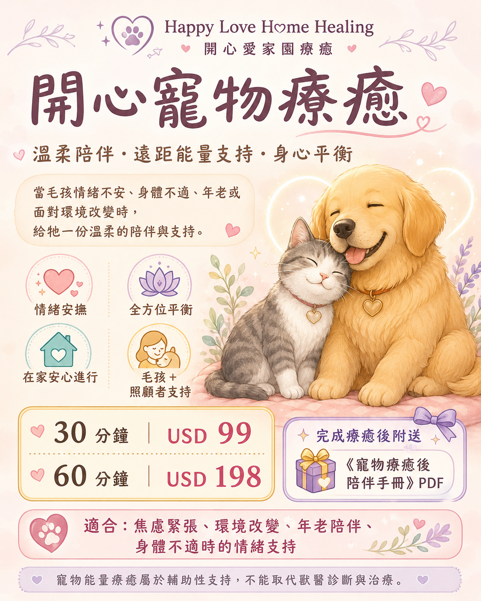
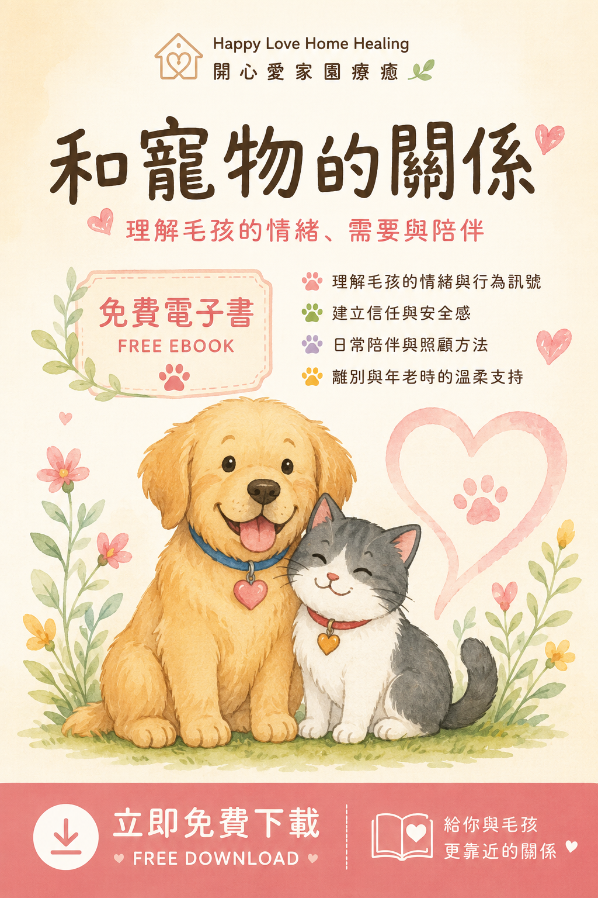

💗
情緒焦慮
緊張、害怕、容易受驚，或長時間無法安定。
每一位毛孩，都是靈魂的家人。當牠們出現焦慮、害怕、環境改變、年老、身體不適或行為改變時，除了必要的獸醫照護，也可以透過溫柔的遠距能量支持，幫助牠們放鬆、穩定，慢慢找回安全感。

療癒以情緒安撫、能量平衡與關係支持為主。
緊張、害怕、容易受驚，或長時間無法安定。
搬家、寄宿、換照顧者或家庭成員改變。
躲藏、防衛、過度吠叫、黏人或突然退縮。
安撫身體不適與疼痛所帶來的情緒壓力。
在生命後期提供更多休息、安全感與陪伴。
同時支持彼此的情緒，重新建立安心的連結。
毛孩無需外出，可留在熟悉的家中安心進行。

陪你理解毛孩的情緒、行為與需要，建立更安心、更有信任感的陪伴關係。
填寫簡短問卷，讓我先了解毛孩目前的身體、情緒、行為及生活變化，提供更貼近你們需要的療癒與陪伴建議。
填寫約 3–5 分鐘，資料不會公開分享。
在 Payhip 選擇 30 或 60 分鐘方案，完成付款。
提供毛孩基本資料、近期狀況、獸醫資訊與希望獲得的支持。
完成後依 Payhip 指示聯絡 BoBo，以安排遠距療癒時間。
毛孩留在熟悉的家中，保持自然作息，無需強迫安靜或入睡。
療癒後獲得回饋、照護建議及《寵物療癒後陪伴手冊》PDF。
寵物能量療癒屬於輔助性的身心支持與陪伴，並非醫療行為，不能取代獸醫診斷、藥物、手術、治療或緊急醫療。如毛孩有疾病、急症或身體不適，請先諮詢合資格獸醫。請勿自行停藥、更改治療或延誤獸醫檢查。療癒不保證特定結果，每一隻毛孩的反應、進度與需要都不同。